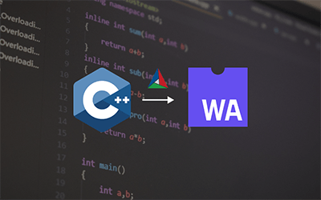
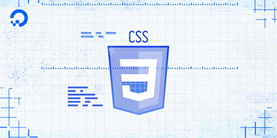

Compile C++ to wasm using CMake
October 10, 2022
As you know useEffect is used in React Components for running code on state changes on states and componenet reloads. But, useEffect() functionis asynchronous which poses problems in some particular situations. But, useLayoutEffect() works like class components life cycle methods which has advantages

When to use :hover and how to use it
October 10, 2022
As you know useEffect is used in React Components for running code on state changes on states and componenet reloads. But, useEffect() functionis asynchronous which poses problems in some particular situations. But, useLayoutEffect() works like class components life cycle methods which has advantages

When to use useLayoutEffect() instead of useEffect()
October 10, 2022
As you know useEffect is used in React Components for running code on state changes on states and componenet reloads. But, useEffect() functionis asynchronous which poses problems in some particular situations. But, useLayoutEffect() works like class components life cycle methods which has advantages